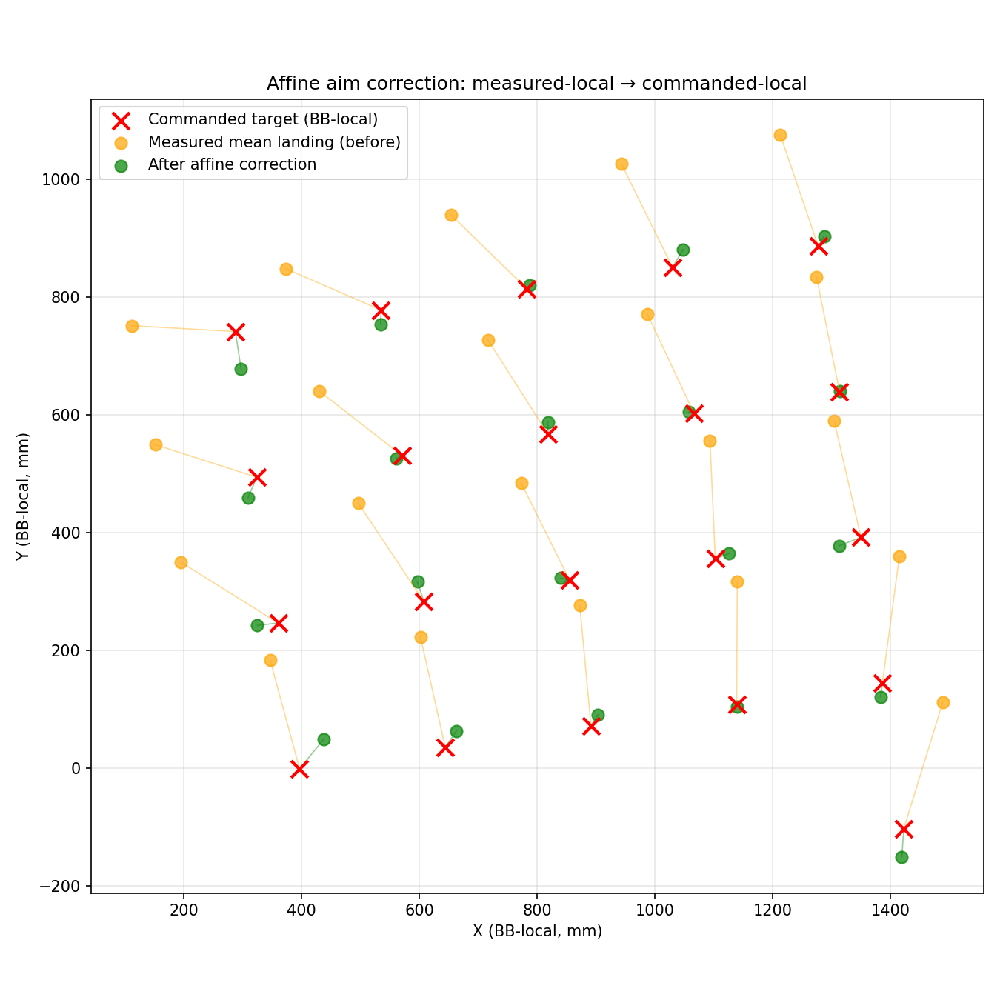
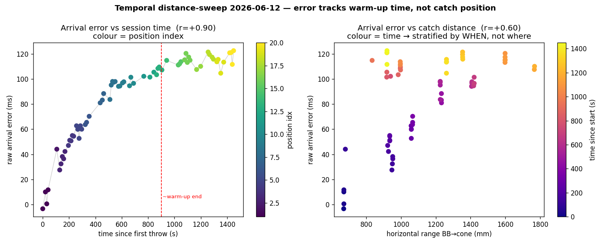
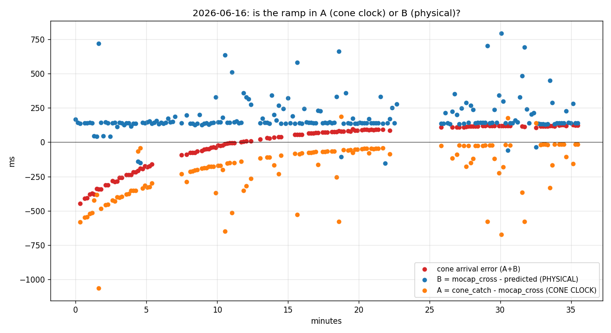
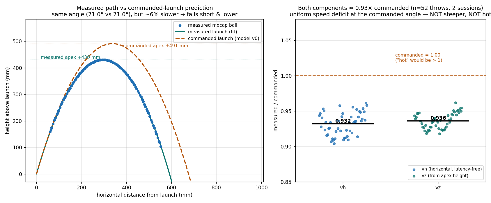
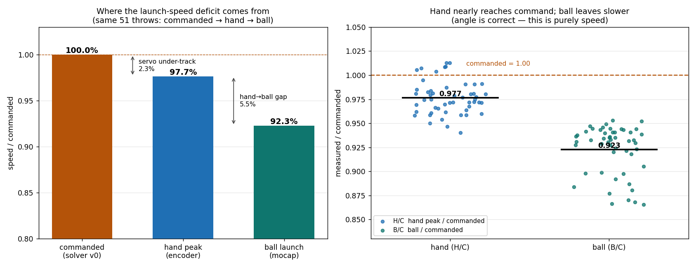

Overview & results
Over nine days in June 2026, the V0 thrower was tuned along two axes — where the ball lands and when it arrives — until it throws to a commanded point and time accurately enough to feed a catching system.
The fix ended up split across two independent knobs. Space is handled by a single
empirical 2D affine that absorbs every spatial execution error at once (yaw, pitch, speed,
geometry). Time is handled by one measured constant —
BB_OP_THROW_RELEASE_LATENCY_MS = 44 — applied as "command the throw 44 ms earlier."
That split was simply what worked for this problem.
The problem & how we measured it
The thrower's pipeline is open-loop: global → BB-local → inverse-ballistics solve → throw.
It assumes an idealised machine (forward kinematics, release point, launch timing). Real hardware departs
from that model in ways that are stable run-to-run but hard to pin on any single physical cause — so the
net effect shows up as a systematic bias in both landing position and arrival time.
Two independent measurement grounds
Space is measured with motion capture (QTM): command a known grid of throws, record where
the balls actually land, fit a correction. Time is measured with a sensorized
catching cone — a piezo contact sensor on a time-synced Teensy that latches a wall-clock
timestamp at impact, on the same 0x7DD time-sync domain that schedules the throw.
That gives mocap-free arrival times at ~µs sensor resolution against ~1 ms command granularity.
The temporal measurand is deliberately end-to-end:
arrival_error = t_catch − predicted_landing_time, integrating the whole chain (command latency,
firmware scheduling, release lag, flight model, cone geometry). The protocol has three phases — R
repeatability (calibrates the systematic offset δ), D delay sweep, X distance sweep — with a
crisp acceptance bar: |mean residual| ≤ 10 ms per group after δ removal. Misses and
unsynced events are recorded and excluded, never silently dropped.
Spatial thread — the aim-correction affine
The thrower landed balls a systematic ~195 mm from where it was aimed, consistently offset and slightly sheared across the target grid. Rather than chase each physical contributor, the approach is empirical: learn a single 2×3 affine in the BB-local ground plane that warps the commanded aim point to cancel the measured bias, applied between the global→local transform and the inverse-ballistics solve.

| Per grid cell | Uncorrected | Corrected |
|---|---|---|
| Mean error | 194.6 mm | 30.9 mm |
| Max | 224.8 mm | 139.7 mm |
| Std | — | 30.0 mm |
Three things make this number trustworthy: it generalises (a fit predicting 27.5 mm residual measured 30.9 mm on a fresh out-of-sample session — within 3 mm, so the affine captured a real bias, not noise); the corrected residual is now mostly random, not systematic (~13.5 mm systematic vs ~34 mm throw-to-throw scatter); and a second-stage refit buys only ~7%, so the map is considered done. Throw-to-throw repeatability — not aim — is now the spatial bottleneck.
This affine was fit with the machine's then-current (late, hot) release. So any later firmware change to release timing or velocity moves every landing and invalidates the affine — the discipline that emerged: treat a firmware fix + spatial re-fit + repeat campaign as one before/after experiment.
Temporal thread — the timing campaign
With space handled, the question became: does the ball arrive when the system says it will? The first campaign measured a stable systematic delay of δ ≈ +126 ms (the ball arriving late), with the delay sweep showing no slope vs commanded delay — exonerating the wall-clock scheduler and pointing at the physical throw. Decomposed, δ was ~82 ms release lag + ~51 ms flight stretch − 7 ms ball radius. Chasing those two terms produced the most instructive part of the whole project — including two wrong turns that each looked completely real.
The five-step arc
-
Release-lag root cause — a real firmware bug · 2026-06-11
Two independent, individually-correct "decel-zero" mechanisms in
HandPathPlannercancel each other, so the whole throw stroke runs after the commanded time and the ball releasest2 = 0.273/v ≈ 83 mslate at 3.28 m/s — matching the measured 82.3 ms exactly. A two-line fix. Deferred until the rest of the picture was clear. -
The "warm-up drift" — which was not a thrower effect at all · 2026-06-12 → 06-16
A distance sweep looked like arrival error grew with catch distance. It didn't — it tracked session time, ramping from ~0 ms cold to a ~115 ms plateau over ~10 min. After ruling out temperature, duty-cycle, power-on, and ROS state, the real cause was a clock-sync measurement artifact: the can-bridge time master slews (instead of stepping) when it re-acquires the Jetson clock after a gap, so its broadcast — and every slave that follows it, including the cone — converges over ~30 min, masquerading as a warm-up. The throw was temporally stable the whole time. Fixed with step-on-re-acquisition + honest staleness.
-
Release-lag fix validated · 2026-06-17
With the firmware fix flashed and the clock fixed, systematic delay dropped ~140 → ~44 ms and measured release lag fell to ≈0. The session concluded the residual 44 ms was a real launch-execution error: the ball leaving ~3° steeper and ~10% faster than commanded.
-
…the "+3° / +10% hot launch" reading was wrong — but so was "as-commanded" · 2026-06-18, re-tested 2026-06-19
2026-06-18 reversed the "+3°/hot" claim, arguing from the hand encoder (hand reaches 98–101% of commanded velocity and the full stroke) that execution is essentially as-commanded. A direct trajectory re-test for this chapter (Figure 4) shows the fuller picture: the ball launches at the commanded angle (~71°, not steeper) but at a uniform ~7% speed deficit — so it is neither hot nor exactly as-commanded. Detail below.
-
Resolution — measure the constant, command it away · 2026-06-18
What remains is a constant ~44 ms transport/actuator latency, flat across distance, speed, and pitch. Deployed as
BB_OP_THROW_RELEASE_LATENCY_MS = 44— command the throw 44 ms earlier so the latency cancels and the ball arrives on time. Purely temporal, so it leaves the spatial affine untouched. Arrival error: <10 ms mean/median, ≤14 ms max.


The two series share one quantity with opposite sign:
A = cone_catch − mocap_cross and B = mocap_cross − predicted, so
A + B = cone_catch − predicted — mocap_cross cancels. Any per-throw error in that
single shared term (the ball is caught at the plane, which perturbs its descent and the
plane-crossing estimate) therefore pushes A and B by equal and opposite amounts. That's the
mirror image you see — it's a property of the decomposition, not a physical coupling, and it's exactly why
the sum (red) is the robust quantity while the per-throw split is noisy. The trend split
(A ramps, B flat) survives because it's a slow average, immune to that symmetric per-throw noise.
Did it really launch hot? A trajectory re-test
The "+3° steeper / +10% hot" claim was never actually visualised at the time, so for this chapter the two clean post-fix sessions (2026-06-17, 52 throws total) were re-analysed from the raw mocap with one rule: lean only on quantities that cannot be faked by the 44 ms release latency or by the wrong model release height — the horizontal launch speed (a constant slope; a time offset can't change it) and the apex height (a late release shifts the arc in time, not in height).

g_eff matches true gravity to <0.1%, so
drag is negligible and the apex is a clean vz.The verdict (tool: zTesting/throw_testing/temporal_accuracy/plot_launch_geometry.py): the measured
arc has the same launch angle as commanded (71.1° vs 71.0°) but a lower apex
(≈428 vs 491 mm) and shorter range, because vh and vz are both ≈0.93×
commanded. A genuinely hot/steeper launch would peak higher; this one peaks lower. So both
prior readings were off:
- 2026-06-17's "+3° steeper / +10% hot" is refuted — the inflated
vzcame from extrapolating velocity to an announced release point that sits ~335 mm below the true launch height. - 2026-06-18's "execution as-commanded" is also incomplete — the hand reaches ~98% of commanded velocity, but the ball leaves at ~92% (a launch-side speed gap the hand-encoder argument didn't fully capture).
So where does the missing speed go? One 06-18 distance-sweep bag (16-36-14) recorded the hand
encoder, the mocap ball, and the command together, so the deficit can be localised along the chain
commanded → hand → ball on the same 51 throws (Figure 5):

plot_speed_chain.py.Verdict on the open question: the deficit is mostly a hand→ball gap (~5.5%) with a
minor servo shortfall (~2.3%) — not upstream of the hand, and nothing to do with the ball's flight or angle
(the encoder's barrel angle reads commanded to within 0.03°, and mocap agrees). The obvious lever is
BBTraj::LINEAR_GAIN_FACTOR, still 1.0 (never calibrated) while the Jugglebot
platform hand carries 1.035; calibrating it (≈1.08) — or the spool radius — would close most of it at the root.
None of this changes the deployed fix: aim_correction empirically absorbs the spatial consequence
of a uniform speed scale, and the temporal offset is untouched. But it corrects the record on what the
residual execution error actually is. This re-analysis is new (2026-06-19); the 06-17
and 06-18 entries still carry the superseded reading and need a withdrawn-claim note.
Two larger root-cause routes were also pursued and abandoned on purpose, documented so they aren't re-run: a kinematic system-ID (fit the physical geometry + per-axis calibration from mocap launch state) gave physically-absurd, run-to-run-unstable parameters — mocap launch-state inference simply can't cleanly separate geometry / execution / timing on this rig; and a torque-feedforward sweep found the release lag is non-monotonic in feedforward (the original hand-only term is already optimal; more or less both make it worse), which proves the 44 ms is a constant transport latency — not a tracking lag, so ODrive gain tuning won't remove it either.
Key insights & developments
The methodological takeaways — the things that outlived any one fix on this campaign.
On this rig, mocap launch-state inference cannot cleanly separate geometry, launch execution, and release timing — the joint fit is unreliable. The sensorized cone (direct landing position + catch timestamp) is the ground truth; use it rather than more kinematic-ID.
Several "physical effects" here turned out to be measurement-limited readings: the warm-up "drift" (a bridge clock slew), the "+3° hot launch" (velocity extrapolated to a wrong release height — re-tested in Figure 4), and a phantom "+115 ms cone transit" (a KF track silently coasting off-gate). The recurring fix was an independent clock or sensor, and an assumption-light quantity (apex height, horizontal speed).
The non-monotonic feedforward sweep and the unstable kinematic-ID are written down with their numbers precisely so the next person doesn't re-run them — and because each negative result was itself diagnostic (the FF result is what proved the latency is transport, not bandwidth).
The aim-correction was fit with the machine's as-built release (late, and ~7% slow), so a release-timing or speed change forces a spatial re-fit. "Fix + re-fit + repeat campaign as one before/after experiment" is now the standing discipline.
Open problems
Aggregated and ranked from the six entries' follow-ups — the things still genuinely unresolved at the close of this chapter.
Cone piezo no-fire on close catches
High~40–55% of spatially-close throws don't trigger the contact sensor and are excluded as "misses." This caps the cone's measurement yield and would directly matter for real catching. A sensitivity/threshold pass is warranted.
Carried from 2026-06-12 (#6) → 2026-06-18 (#1) · still outstanding
The 44 ms latency is compensated, not localized
MediumIt's characterized as a constant transport delay and offset away, but not traced to a stage (CAN command pipeline vs ODrive command-processing vs estimator). If we ever want it gone rather than cancelled, that's the dig.
2026-06-18 (#4)
yaw_min = 0° rejects slightly-negative required yaw
Medium3/75 temporal throws failed inverse-ballistics on "Yaw out of BB range [0,185°]." Limits some workspace directions; revisit the yaw zero/range if those targets matter.
2026-06-18 (#2)
Affine workspace coverage & height extrapolation
LowThe aim-correction is a first-order 2D affine fit at z = 750 mm with no z-bias term. "Very good across most of the workspace," but the far corners and cone-height plane are extrapolations — confirm or re-fit if they drift.
2026-06-10 & 2026-06-18 (#3)
Catch feedforward is untouched
LowTrajectory.h buildCatch was left hand-only; its own inertia phasing (ball acquired
mid-stroke) is an untested potential improvement — relevant once catching is integrated.
2026-06-18 (#5)
Deferred temporary change: relaxed mocap alignment gate
LowThe mocap publish gate was relaxed to 2000 mm / 180° to unblock a Base-offset session. It transforms no poses, but is a deliberate relic — restore 2.5 mm / 1.0° if the QTM frame is ever re-zeroed.
2026-06-10
Source entries
This chapter is a reading lens, not a source of record — every claim above lives in one of these logbook entries, which remain authoritative. Newest first.
| Date | Entry | What it established |
|---|---|---|
| 06-18 | Temporal accuracy resolved (fractured solution) | The 44 ms offset; kinematic-ID & feedforward ruled out. ("+3°/hot" called an artifact — refined for this chapter to a ~8% launch-speed deficit, localised hand→ball; Figures 4–5.) resolved |
| 06-17 | Release-lag fix validated; launch discrepancy | 140 → 44 ms on hardware; release lag ≈ 0; "+3°/hot launch" reading (later withdrawn). resolved |
| 06-12 | Temporal "warm-up drift" | The drift is a bridge clock-sync artifact, not a thrower effect; clock fix. resolved |
| 06-11 | Release-lag firmware analysis | Two decel-zero mechanisms cancel; the 2-line HandPathPlanner fix. resolved |
| 06-10 | Temporal-accuracy protocol + cone uplink | The R/D/X protocol, the cone as a µs arrival sensor, first δ decomposition. resolved |
| 06-10 | Throw aim-correction validated | The 2D affine; 195 → 31 mm (84%); repeatability is the new spatial bottleneck. resolved |